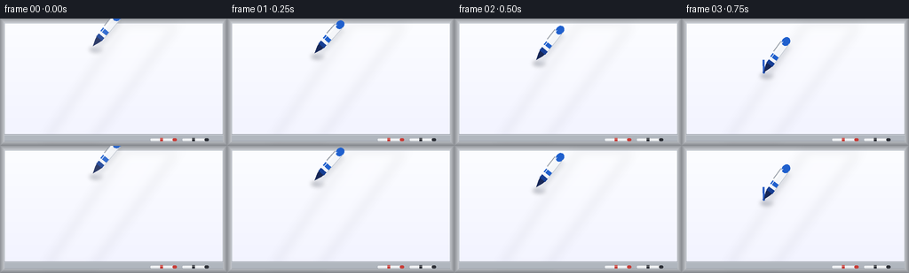
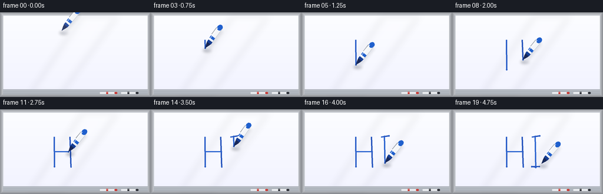

CODING AGENTS AS PIXEL WORLD MODELS
traex/Seed-2.1-Pro-0915 · phygen_032
点击播放 · 原生 RGB 像素
逐轮保存的候选
回放视频、检查图与代码变化。
每份候选均可单独播放。实际图片检查记录在下方工具轨迹中。
候选 01播放与检查图
点击播放 · 原生 RGB 像素


展开代码变化
--- 上一保存版本
+++ 本次保存版本
@@ -0,0 +1,282 @@
+"""Procedural t2v: a blue dry-erase marker writing "HI" on a whiteboard.
+
+20 frames, 256x144, 4 fps. Everything is rendered with PIL/numpy at 3x
+supersampling and downsampled for smooth anti-aliased edges.
+"""
+import math
+from pathlib import Path
+
+import numpy as np
+from PIL import Image, ImageDraw, ImageFilter
+
+import artifact_io
+
+W, H, N, FPS = 256, 144, 20, 4.0
+S = 3 # supersampling factor
+CASE_DIR = Path(__file__).parent
+
+
+# ---------------------------------------------------------------- board scene
+def render_board():
+ """Static whiteboard with aluminum frame, tray, and resting markers."""
+ w, h = W * S, H * S
+ img = Image.new("RGB", (w, h), (214, 219, 226))
+ d = ImageDraw.Draw(img)
+
+ # Aluminum frame (outer 5 px in final resolution).
+ frame = 5 * S
+ for i in range(frame):
+ t = i / frame
+ c = int(150 + 55 * t)
+ d.line([(i, i), (w - 1 - i, i)], fill=(c, c + 3, c + 8))
+ d.line([(i, h - 1 - i), (w - 1 - i, h - 1 - i)], fill=(c - 18, c - 15, c - 10))
+ d.line([(i, i), (i, h - 1 - i)], fill=(c - 6, c - 3, c + 2))
+ d.line([(w - 1 - i, i), (w - 1 - i, h - 1 - i)], fill=(c - 12, c - 9, c - 4))
+
+ # Whiteboard panel with a faint vertical gradient.
+ x0, y0, x1, y1 = frame, frame, w - frame, h - frame
+ panel_h = y1 - y0
+ grad = Image.new("RGB", (1, panel_h))
+ for yy in range(panel_h):
+ t = yy / panel_h
+ v = int(252 - 10 * t)
+ grad.putpixel((0, yy), (v, min(v + 1, 255), 255))
+ img.paste(grad.resize((x1 - x0, panel_h)), (x0, y0))
+
+ # Soft diagonal gloss sheen.
+ sheen = Image.new("RGBA", (w, h), (0, 0, 0, 0))
+ sd = ImageDraw.Draw(sheen)
+ sd.polygon(
+ [(int(w * 0.55), y0), (int(w * 0.78), y0),
+ (int(w * 0.40), y1), (int(w * 0.20), y1)],
+ fill=(255, 255, 255, 26),
+ )
+ sheen = sheen.filter(ImageFilter.GaussianBlur(6 * S))
+ img.paste(Image.alpha_composite(img.convert("RGBA"), sheen).convert("RGB"), (0, 0))
+
+ # Inner shadow along the panel edges.
+ d = ImageDraw.Draw(img)
+ d.rectangle([x0, y0, x1 - 1, y1 - 1], outline=(188, 194, 202))
+ d.line([(x0 + 1, y0 + 1), (x1 - 2, y0 + 1)], fill=(205, 210, 217))
+ d.line([(x0 + 1, y0 + 1), (x0 + 1, y1 - 2)], fill=(205, 210, 217))
+
+ # Marker tray along the bottom (sits inside the lower frame area).
+ tray_top = (H - 13) * S
+ d.rectangle([frame, tray_top, w - frame, h - frame], fill=(176, 182, 190))
+ d.line([(frame, tray_top), (w - frame, tray_top)], fill=(120, 126, 134))
+ d.line([(frame, tray_top + S), (w - frame, tray_top + S)], fill=(214, 219, 225))
+ d.line([(frame, h - frame - 1), (w - frame, h - frame - 1)], fill=(140, 146, 154))
+
+ # Two markers resting in the tray for scene context.
+ def resting_marker(cx, cy, color, length=30 * S, body=3.4 * S):
+ d.rounded_rectangle(
+ [cx - length / 2, cy - body / 2, cx + length / 2, cy + body / 2],
+ radius=body / 2, fill=(238, 240, 243), outline=(160, 166, 174),
+ )
+ d.rounded_rectangle(
+ [cx + length / 2 - body * 1.4, cy - body / 2,
+ cx + length / 2, cy + body / 2],
+ radius=body / 2, fill=color,
+ )
+ d.rectangle(
+ [cx - length * 0.12, cy - body / 2, cx - length * 0.02, cy + body / 2],
+ fill=color,
+ )
+ d.line(
+ [(cx - length / 2 + body, cy - body / 4),
+ (cx + length / 2 - body * 1.6, cy - body / 4)],
+ fill=(255, 255, 255), width=max(1, S // 2),
+ )
+
+ resting_marker(int(w * 0.72), tray_top + 6 * S, (200, 60, 55))
+ resting_marker(int(w * 0.86), tray_top + 6 * S, (45, 48, 55))
+
+ return img
+
+
+# ------------------------------------------------------------- writing path
+def build_path():
+ """Waypoints of "HI" with explicit pen-up / pen-down segments."""
+ top, bot, mid = 46, 98, 72
+ hx0, hx1 = 92, 120
+ ix = 142
+ rng = np.random.default_rng(7)
+
+ def jitter(p):
+ return (p[0] + rng.uniform(-1.1, 1.1), p[1] + rng.uniform(-1.1, 1.1))
+
+ raw = [
+ (True, [(hx0, top), (hx0, bot)]),
+ (False, [(hx1, top)]),
+ (True, [(hx1, top), (hx1, bot)]),
+ (False, [(hx0, mid)]),
+ (True, [(hx0, mid), (hx1, mid)]),
+ (False, [(ix - 7, top)]),
+ (True, [(ix - 7, top), (ix + 7, top)]),
+ (True, [(ix + 7, top), (ix, top), (ix, bot)]),
+ (True, [(ix, bot), (ix - 7, bot), (ix + 7, bot)]),
+ ]
+ return [(draw, [jitter(p) for p in pts]) for draw, pts in raw]
+
+
+def path_geometry(strokes):
+ """Flat segments with cumulative weighted arc length.
+
+ Pen-up moves get a small fixed weight so the marker crosses them quickly.
+ """
+ segments = []
+ total = 0.0
+ for draws, pts in strokes:
+ for a, b in zip(pts[:-1], pts[1:]):
+ length = math.hypot(b[0] - a[0], b[1] - a[1])
+ weight = length if draws else 10.0
+ total += weight
+ segments.append([np.array(a), np.array(b), draws, total])
+ return segments, total
+
+
+def position_at(segments, dist):
+ """Tip position plus drawable partial segments up to cumulative dist."""
+ tip = None
+ drawn = []
+ prev = 0.0
+ for a, b, draws, end in segments:
+ if dist >= end:
+ if draws:
+ drawn.append((a, b, 1.0))
+ tip = b
+ elif dist > prev:
+ u = (dist - prev) / (end - prev)
+ tip = a + (b - a) * u
+ if draws:
+ drawn.append((a, tip, u))
+ break
+ prev = end
+ if tip is None:
+ tip = segments[0][0]
+ return tip, drawn
+
+
+# ------------------------------------------------------------------- marker
+def draw_marker(canvas, tip_xy, angle_deg, scale=1.0, alpha_scale=1.0):
+ """Blue marker with nib tip at tip_xy, body extending along rotated +x."""
+ s = S * scale
+ a = math.radians(angle_deg)
+ ca, sa = math.cos(a), math.sin(a)
+
+ def tx(p):
+ x, y = p[0] * s, p[1] * s
+ return (tip_xy[0] + x * ca - y * sa, tip_xy[1] + x * sa + y * ca)
+
+ layer = Image.new("RGBA", canvas.size, (0, 0, 0, 0))
+ d = ImageDraw.Draw(layer)
+ blue, blue_dark = (32, 96, 205), (22, 62, 148)
+ nib_dark = (24, 40, 88)
+
+ def poly(local_pts, fill):
+ d.polygon([tx(p) for p in local_pts], fill=fill)
+
+ def local_ellipse(cx, cy, rx, ry, fill):
+ pts = [tx((cx + rx * math.cos(t), cy + ry * math.sin(t)))
+ for t in np.linspace(0, 2 * math.pi, 24, endpoint=False)]
+ d.polygon(pts, fill=fill)
+
+ # Felt nib, collar, barrel, cap, clip, highlight.
+ poly([(0, 0), (8, -3.0), (11, -3.6), (11, 3.6), (8, 3.0)], nib_dark)
+ poly([(11, -4.0), (15.5, -4.0), (15.5, 4.0), (11, 4.0)], blue_dark)
+ poly([(15.5, -4.4), (43, -4.4), (43, 4.4), (15.5, 4.4)], (244, 246, 249))
+ poly([(19, -4.4), (23.5, -4.4), (23.5, 4.4), (19, 4.4)], blue)
+ local_ellipse(43, 0, 5.2, 4.4, blue)
+ poly([(26, -5.3), (40, -5.3), (40, -4.5), (26, -4.5)], (150, 156, 166))
+ d.line([tx((15.5, 4.4)), tx((43, 4.4))], fill=(196, 202, 210), width=max(1, int(0.7 * s)))
+ d.line([tx((17, -2.6)), tx((41, -2.6))], fill=(255, 255, 255), width=max(1, int(0.9 * s)))
+
+ if alpha_scale < 1.0:
+ layer.putalpha(layer.getchannel("A").point(lambda v: int(v * alpha_scale)))
+ canvas.alpha_composite(layer)
+
+
+def draw_shadow(canvas, tip_xy, angle_deg, strength=1.0):
+ """Soft contact shadow cast by the marker onto the board."""
+ s = S
+ layer = Image.new("RGBA", canvas.size, (0, 0, 0, 0))
+ d = ImageDraw.Draw(layer)
+ a = math.radians(angle_deg)
+ cx, cy = tip_xy[0] + 3 * s, tip_xy[1] + 4 * s
+ d.ellipse([cx - 7 * s, cy - 3 * s, cx + 7 * s, cy + 3 * s],
+ fill=(30, 40, 60, int(70 * strength)))
+ dx, dy = math.cos(a), math.sin(a)
+ px, py = -dy, dx
+ mid = np.array([cx, cy]) + np.array([dx, dy]) * 22 * s
+ w = 3.2 * s
+ corners = [mid + np.array([dx, dy]) * 20 * s + np.array([px, py]) * w,
+ mid + np.array([dx, dy]) * 20 * s - np.array([px, py]) * w,
+ mid - np.array([dx, dy]) * 20 * s - np.array([px, py]) * w,
+ mid - np.array([dx, dy]) * 20 * s + np.array([px, py]) * w]
+ d.polygon([tuple(c) for c in corners], fill=(30, 40, 60, int(28 * strength)))
+ layer = layer.filter(ImageFilter.GaussianBlur(2.2 * s))
+ canvas.alpha_composite(layer)
+
+
+# ------------------------------------------------------------------- driver
+def main():
+ board = render_board()
+ strokes = build_path()
+ segments, total = path_geometry(strokes)
+ start_tip = segments[0][0] * S
+
+ ink_blues = [(26, 82, 196), (22, 72, 184), (30, 90, 205)]
+ frames = []
+
+ for f in range(N):
+ frame = board.convert("RGBA")
+
+ # Tip position / timeline.
+ approach_d = 20 * S
+ if f <= 1:
+ u = 0.0
+ tip = start_tip + np.array([0.62, -0.78]) * approach_d * (1 - f / 2.0)
+ lift_alpha = 0.75 + 0.25 * (f / 2.0)
+ elif f <= 18:
+ u = (f - 2) / 16.0
+ tip, _ = position_at(segments, u * total)
+ tip = tip * S
+ lift_alpha = 1.0
+ else:
+ u = 1.0
+ tip, _ = position_at(segments, total)
+ tip = tip * S + np.array([0.62, -0.78]) * 6 * S
+ lift_alpha = 0.9
+
+ # Ink revealed up to this frame.
+ _, drawn = position_at(segments, u * total)
+ ink = Image.new("RGBA", frame.size, (0, 0, 0, 0))
+ di = ImageDraw.Draw(ink)
+ stroke_index = 0
+ for a, b, frac in drawn:
+ color = ink_blues[stroke_index % len(ink_blues)]
+ width = int(2.6 * S)
+ di.line([tuple(a * S), tuple(b * S)], fill=color + (238,),
+ width=width, joint="curve")
+ if frac >= 1.0:
+ stroke_index += 1
+ for a, b, frac in drawn:
+ r = 1.3 * S
+ x, y = b * S
+ di.ellipse([x - r, y - r, x + r, y + r], fill=ink_blues[0] + (238,))
+ frame.alpha_composite(ink)
+
+ angle = -52 + 2.5 * math.sin(f * 1.7) + 1.4 * math.sin(f * 0.6 + 1.3)
+ draw_shadow(frame, tip, angle, strength=min(1.0, lift_alpha + 0.15))
+ draw_marker(frame, tip, angle, alpha_scale=min(1.0, lift_alpha + 0.15))
+
+ out = frame.convert("RGB").resize((W, H), Image.Resampling.LANCZOS)
+ frames.append(np.asarray(out, dtype=np.uint8))
+
+ frames = np.stack(frames, axis=0)
+ artifact_io.save(frames, CASE_DIR)
+ print(f"saved {frames.shape} frames to {CASE_DIR}")
+
+
+if __name__ == "__main__":
+ main()
可观测工具轨迹
实际执行的命令与返回图片。
命令 1exit 0
/bin/bash -lc 'cat prompt.txt GENERATION_RULES.md task_spec.json 2>/dev/null; ls -la'
命令 2exit 0
/bin/bash -lc 'cat artifact_io.py'
命令 3exit 0
/bin/bash -lc 'cd . && python generate.py && ls -la frames | head -8 && ls -la pixels.npz inspection.png index.html'
视觉工具实际返回图片 1

保存候选 1 份；完成命令 3 次；可验证图片返回 1 张。原始 API 响应与完整日志保留在本地。